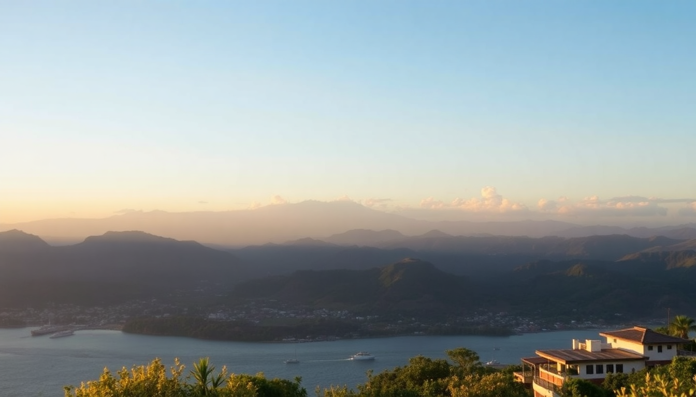

Getting Around Indonesia: Ferries, Flights & Car Rentals

I learned the hard way that Indonesia’s geography is a puzzle. You can’t just rent a car and drive from Bali to Komodo—water gets in the way. Over three weeks hopping between Bali, Yogyakarta, Komodo, and Jakarta, I figured out which ferries are worth the seasickness, which flights save you a day, and when a rental car actually makes sense. Here’s what worked and what didn’t.
Should you fly or take the ferry between islands?
It depends on your tolerance for motion sickness and how much time you have. For long hops—say Bali to Jakarta—flying is the only sane option. But for shorter routes like Bali to Lombok or Bali to the Gilis, the ferry is fine if you pick the right operator.
Fast ferries from Padang Bai in Bali to Labuan Bajo (gateway to Komodo) take about 12 hours and cost around 400,000 IDR. I did this and regretted it. The sea was rough, the seats were plastic, and a woman two rows ahead vomited for three hours. Next time I’ll fly.
- Bali to Lombok: Take the Eka Jaya fast ferry from Padang Bai to Lembar. It’s 2 hours, 200,000 IDR, and generally calm in the morning.
- Bali to Gilis: Gili Gili fast ferry from Serangan port runs three times daily. Book the 7 AM slot to avoid afternoon chop.
- Bali to Labuan Bajo: Fly. Wings Air and Batik Air do the 1.5-hour hop from Ngurah Rai Airport for about 600,000 IDR. Worth every rupiah.
Which domestic airlines are reliable in Indonesia?
Indonesian domestic airlines are a mixed bag. I flew four different carriers, and the experience ranged from “fine” to “why did I do this.” Stick to the ones with newer fleets and avoid the ultra-budget options for longer routes.
Garuda Indonesia is the gold standard—clean planes, on-time departures, and legroom that doesn’t crush your knees. I flew them from Jakarta to Yogyakarta and it was painless. Lion Air gets a bad rap, but their 737s are fine for short hops; just expect a 30-minute delay as standard. Citilink is the budget arm of Garuda and decent for the price.
- Garuda Indonesia: Best for Jakarta (CGK) to Yogyakarta (YIA) or Bali (DPS) to Jakarta (CGK). Book through their app for the best fare.
- Lion Air: Good for Yogyakarta (YIA) to Labuan Bajo (LBJ) —direct, 2 hours, around 500,000 IDR. The cabin crew handed out water but no snacks.
- Wings Air: Small ATR planes. Use for short routes like Labuan Bajo to Bali. Avoid if you’re tall; the seats don’t recline.
- Batik Air: A Lion Air subsidiary with better service. I used them for Bali to Labuan Bajo and the seat had a working USB port.
How do ferries work for getting around Komodo and the Flores region?
Komodo National Park isn’t connected by roads. You’ll need a boat to island-hop. The two options are a shared public ferry or a private charter. I tried both, and the charter was the better experience by far.
Public ferries from Labuan Bajo to Rinca Island run twice a week and cost 50,000 IDR. They’re packed with locals, chickens, and cargo. You’ll see Komodo dragons, but you’ll also stand for two hours. Private charters from Labuan Bajo cost around 2,000,000 IDR for a full day and include lunch, snorkel gear, and a guide who knows where the dragons hang out.
- Public ferry: Departs Labuan Bajo harbor at 6 AM on Tuesdays and Fridays. Buy your ticket at the Pelni office near the fish market.
- Private charter: I booked through Komodo Dive & Tour on the main strip. They took me to Pink Beach, Padar Island, and Rinca in one day. Worth the price.
- Liveaboard option: If you have 3-4 days, a liveaboard from Labuan Bajo covers Komodo, Rinca, and Manta Point. I didn’t do this, but friends said it’s the best way to avoid crowds.
Is renting a car in Bali or Yogyakarta a good idea?
Yes, but only if you’re comfortable with chaotic traffic and have an International Driving Permit. I rented a car in Bali for three days and a scooter in Yogyakarta for two. The car was better for families; the scooter was better for navigating narrow alleys.
In Bali, traffic around Seminyak and Kuta is brutal. I rented from Bali Rental Car near Ngurah Rai Airport for 350,000 IDR per day (a Suzuki Ertiga). The car was old but reliable. The real problem is parking—most temples and beaches have tiny lots. I ended up paying a local guy 10,000 IDR to watch the car at Uluwatu Temple.
- Bali rental: Use Bali Rental Car or Mula Mula. Avoid the guys waving signs at the airport exit—they overcharge.
- Yogyakarta scooter: Rent from Yogya Scooter on Jalan Malioboro. 80,000 IDR per day, helmet included. The traffic is less insane than Bali.
- Jakarta: Don’t rent a car. Use Gojek or Grab for rides. The toll system and jams make driving a nightmare.
How do you get around Jakarta without losing your mind?
Jakarta is huge, congested, and not walkable. I spent two days there and relied entirely on ride-hailing apps and the TransJakarta bus system. The MRT is new and clean, but it only covers a small part of the city.
Gojek is better than Grab in Jakarta—more drivers, lower prices. I used it to get from Kota Tua to Menteng for about 30,000 IDR. The TransJakarta busway has dedicated lanes, so it’s faster than a car during rush hour. I took it from Blok M to Kota station and it took 40 minutes instead of the 90 a taxi would have.
- Gojek: Download the app before you arrive. Cash is accepted.
- TransJakarta: Use the Corridor 1 bus from Blok M to Kota for sightseeing. Buy a card at any station for 20,000 IDR.
- MRT Jakarta: Runs from Lebak Bulus to Bundaran HI. Clean, air-conditioned, and 5,000 IDR per ride. Good for getting to Grand Indonesia mall.
FAQ
How much does a ferry from Bali to Komodo cost? A fast ferry from Padang Bai to Labuan Bajo costs around 400,000 IDR and takes 12 hours. A flight with Wings Air costs about 600,000 IDR and takes 1.5 hours. I recommend flying unless you have a strong stomach and a lot of time.
Do I need an International Driving Permit to rent a car in Indonesia? Yes. The police in Bali and Yogyakarta check for it. I was pulled over near Ubud and the officer asked for my permit. I had one, so I got off with a warning. Without it, expect a fine of 250,000 IDR.
Is it safe to rent a scooter in Yogyakarta? It’s safe if you have experience. The traffic is slower than Bali, but roads can be potholed. I rented from Yogya Scooter and rode to Borobudur without issues. Wear a helmet—the police are strict near the temple.
Conclusion
- Fly between islands for anything over two hours. Ferries are for short hops like Bali to Lombok.
- Use Gojek in Jakarta and Grab in Bali. They’re cheaper than taxis and work reliably.
- Rent a car in Bali for exploring the north coast, but avoid Seminyak traffic by leaving before 7 AM.
- Book private charters in Komodo from Labuan Bajo. Public ferries are an adventure, but not a comfortable one.
- Always carry cash for parking, tolls, and ferry tickets. Cards are rarely accepted outside hotels and airports.